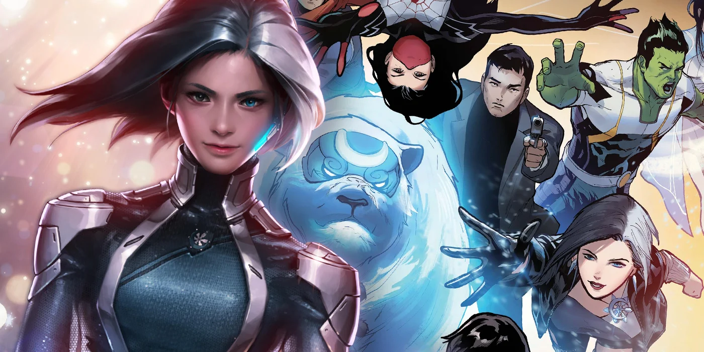

About Luna
Seol Hee was an aspiring singer hoping to use her voice and dancing skills to earn enough money to take care of her elderly grandmother, who has raised Seol since the tragic deaths of her parents. When the science-obsessed organization known as A.I.M. ambushed a Stark Industries event where Seol was performing, Seol bravely attempted to defend the attendees, resulting in A.I.M. soldiers locking her in a hi-tech storage freezer. While trying to escape, Seol was exposed to the contents of an advanced cold-fusion energy experiment, which unexpectedly granted her control over frozen elements. Using her newfound powers to fight back, Seol surprised and defeated the A.I.M. forces’ attack. Dubbed “Luna Snow” by the press, Seol’s heroic actions made her an overnight sensation, and she now uses her talents and powers as a part-time pop star and full-time Super Hero!
Luna and the members of Marvel's New Agent of Atlas
Characteristics
- Luna Snow's real name is Seol Hee.
- She is 22 years old.
- She is a K-Pop singer from South Korea and already released two singles which are "Tonight" and "I Really Wanna".
- She got unusual features, which is heterochromia in the left eye, and poliosis on the left scalp.
- Her emblem is a snowflake with a black crescent moon superimposed on it.
- Her power is cryokinesis, which is the ability to manipulate ice.
Allies
Luna Snow is a part of New Agent of Atlas, a new band of heroes that unite to protect the Pacific Rim. Some of her allies are;